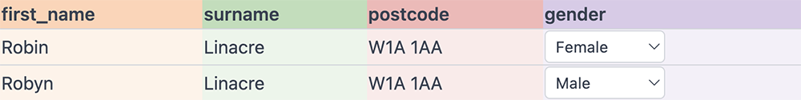
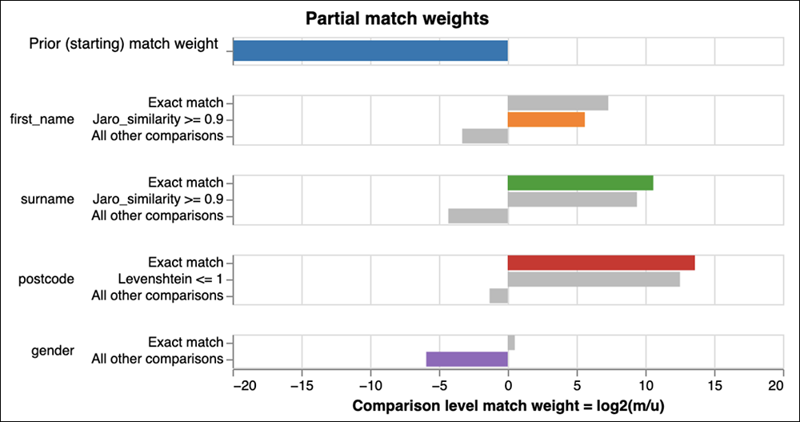
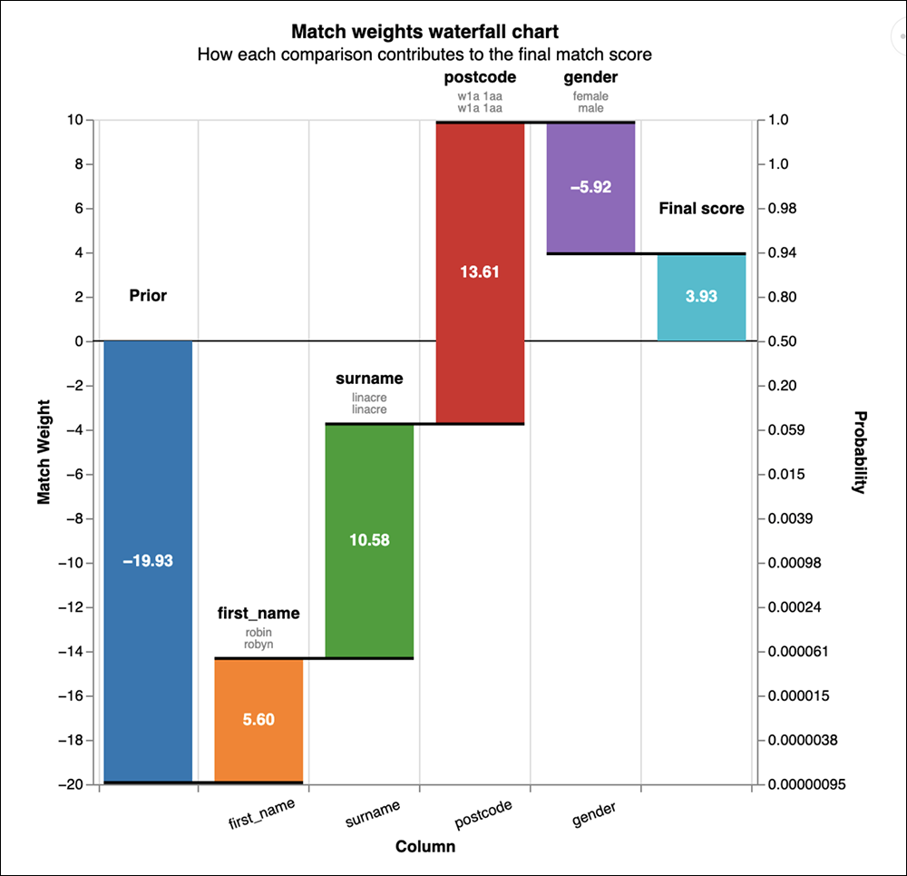

In 2019, the data linking team at the Ministry of Justice was challenged to develop a new data linking methodology to produce new, higher quality linked datasets from the justice system.
The ultimate goal was to share new linked datasets with academic researchers, as part of the ADR UK-funded Data First programme. These datasets – which include data from prisons, probation, and the criminal and family courts – are now available, and researchers can apply for secure access.
The linking methodology is widely applicable and has been published as a free and open source software package called Splink. The software applies statistical best practice to accurately and quickly link and deduplicate large datasets. The software has now been downloaded over 7 million times, and has been used widely in government, academia and the private sector.
The problem
Data duplication is a ubiquitous problem affecting data quality. Organisations often have multiple records that refer to the same entity but no unique identifier that ties these entities together. Data entry errors and other issues mean that variations usually exist, so the records belonging to a single entity aren’t necessarily identical.
For example, in a company, customer data may have been entered multiple times in multiple different databases, with different spellings of names, different addresses, and other typos. The inability to identify which records belong to each customer presents a data quality problem at all stages of data analysis – from basic questions such as counting the number of unique customers, through to advanced statistical analysis.
With the growing size of datasets held by many organisations, any solution must be able to work on very large datasets of tens of millions of records or more.
Approach
In collaboration with academic experts, the team started with desk research into data linking theory and practice, and a review of existing open source software implementations.
One of the most common theoretical approaches described in the literature is the Fellegi-Sunter model. This statistical model has a long history of application for high profile, important record linking tasks such as in the US Census Bureau and the UK Office for National Statistics (ONS).
The model takes pairwise comparisons of records as an input, and outputs a match score between 0 and 1, which (loosely) can be interpreted as the probability of the two records being a match. Since the record comparison can be either two records from the same dataset, or records from different datasets, this is applicable to both deduplication and linkage problems.
An important benefit of the model is explainability. The model uses a number of parameters, each of which has an intuitive explanation that can be understood by a non-technical audience. The relative simplicity of the model also means it is easier to understand and explain how biases in linkage may occur, such as varying levels of accuracy for different ethnic groups.
Example
Consider the following simple record comparison. Are these records a match?

The parameters of the model are known as partial match weights, which capture the strength of the evidence in favour or against these records being a match.
They can be represented in a chart as follows, in which the highlighted bars correspond to the above example record comparison:

We can see, for example, that the first name (Robin vs Robyn) is not an exact match, but they have a Jaro-Winkler similarity of above 0.9. As a result, the model ‘activates’ the corresponding partial match weight (in orange). This lends some evidence in favour of a match, but the partial match weight is not as strong as it would have been for an exact match.
Similarly we can see that the non-match on gender leads to the activation (in purple) of a strong negative partial match weight.
The activated partial match weight can then be represented in a waterfall chart as follows, which shows how the final match score is calculated:

The parameter estimates in these charts all have intuitive explanations:
- The partial match weight on first name is positive, but relatively weak. This makes sense, because the first names are a fuzzy match, not an exact match, so this provides only moderate evidence in favour of the record being a match.
- The match weight for the exact match on postcode is stronger than the equivalent weight for surname. This is because the cardinality of the postcode field in the underlying data is higher than the cardinality for surname, so matches on postcode are less likely to occur by chance than matches on surname.
- The negative match weight for the mismatch on gender is relatively strong. This reflects the fact that, in this dataset, it’s uncommon for the ‘gender’ field to match amongst truly matching records.
The final result is that the model predicts these records are a match, but with only 94% probability: it’s not sure. Most examples would be less ambiguous than this one, and would have a match probability very close to either 0 or 1.
For further details of the theory behind the Fellegi-Sunter model, and a deep dive into the intuitive explanations of the model, I have have developed a series of interactive tutorials.
Implementation
Through our desk research and open source software review, an existing software package called fastLink was identified which implements the Fellegi-Sunter model, but unfortunately the software is not able to handle very large datasets of more than a few hundred thousand records.
Inspired by the popularity of fastLink, the team quickly realised that the methodology it was developing was generally applicable and could be valuable to a wide range of users if published as a software package.
As we spoke to colleagues across government and beyond, we found record linkage and deduplication problems are pervasive, and crop up in many different guises, meaning that any software needed to be very general and flexible.
The result is Splink – which is a Python package that implements the Fellegi-Sunter model, and enables parameters to be estimated using the Expectation Maximisation algorithm.
The package is free to use, and open source. It is accompanied by detailed documentation, including a tutorial and a set of examples.
Splink makes no assumptions about the type of entity being linked, so it is very flexible. We are aware of its use to match data on a variety of entity types including persons, companies, financial transactions and court cases.
The package closely follows the statistical approach described in fastLink. In particular it implements the same mathematical model and likelihood functions described in the fastLink paper (see pages 354 to 357), with a comprehensive suite of tests to ensure correctness of the implementation.
In addition, Splink introduces a number of innovations:
- Able to work at massive scale – with proven examples of its use on over 100 million records.
- Extremely fast – capable of linking 1 million records on a laptop in around a minute.
- Comprehensive graphical output showing parameter estimates and iteration history make it easier to understand the model and diagnose statistical issues.
- A waterfall chart which can be generated for any record pair, which explains how the estimated match probability is derived.
- Support for deduplication, linking, and a combination of both, including support for deduplicating and linking multiple datasets.
- Greater customisability of record comparisons, including the ability to specify custom, user defined comparison functions.
- Term frequency adjustments on any number of columns.
- It’s possible to save a model once it’s been estimated – enabling a model to be estimated, quality assured, and then reused as new data becomes available.
- A companion website provides a complete description of the various configuration options, and examples of how to achieve different linking objectives.
Using Splink
Full documentation and a tutorial are available for Splink, but the following snippet gives a simple example of Splink in action:
from splink.datasets import splink_datasets
from splink.duckdb.blocking_rule_library import block_on
from splink.duckdb.comparison_library import (
exact_match,
jaro_winkler_at_thresholds,
levenshtein_at_thresholds,
)
from splink.duckdb.linker import DuckDBLinker
df = splink_datasets.fake_1000
# Specify a data linkage model
settings = {
"link_type": "dedupe_only",
"blocking_rules_to_generate_predictions": [
block_on("first_name"),
block_on("surname"),
],
"comparisons": [
jaro_winkler_at_thresholds("first_name", 2),
jaro_winkler_at_thresholds("surname"),
levenshtein_at_thresholds("dob"),
exact_match("city", term_frequency_adjustments=True),
exact_match("email"),
],
}
linker = DuckDBLinker(df, settings)
# Estimate model parameters
# Direct estimation using random sampling can be used for the u probabilities
linker.estimate_u_using_random_sampling(target_rows=1e6)
# Expectation maximisation is used to train the m values
br_training = block_on(["first_name", "surname"])
linker.estimate_parameters_using_expectation_maximisation(br_training)
br_training = block_on("dob")
linker.estimate_parameters_using_expectation_maximisation(br_training)
# Use the model to compute pairwise match scores
pairwise_predictions = linker.predict()
# Cluster the match scores into groups to produce a synthetic unique person id
clusters = linker.cluster_pairwise_predictions_at_threshold(
pairwise_predictions, 0.95
)
clusters.as_pandas_dataframe(limit=5)The example shows the flexibility of Splink, and how various types of configuration can be used:
- How should different data fields be compared? In this example, the Jaro-Winkler distance is used for names, whereas Levenshtein is used for date of birth since Jaro-Winkler is not appropriate for numeric data.
- What blocking rules should be used? Blocking rules are the primary determinants of how fast Splink will run, but there is a trade off between speed and accuracy. In this case, the input data is small, so the blocking rules are loose.
- How should the model parameters be estimated? In this case, the user has no labels for supervised training, and so uses the unsupervised Expectation Maximisation approach.
- Is clustering needed? In this case, each person may potentially have many duplicates, so clustering is used. This creates an estimated (synthetic) unique identifier for each entity (person) in the input dataset.
Outcomes
Splink has been used to link some of the largest datasets held by the Ministry of Justice as part of the Data First programme, and researchers are now able to apply for secure access to these datasets. Research using this data won the ONS Linked Administrative Data Award at the 2022 Research Excellence Awards.
More widely, the demand for Splink has been higher than we expected – with over 7 million downloads. It has been used in other government departments including the Office for National Statistics and internationally, the private sector, and published academic research from top international universities.
Splink has also had external contributions from over 30 people, including staff at the Australian Bureau of Statistics, DataBricks, other government departments, academics, and various private sector consultancies.
Editor’s note: For more on data linkage, check out our interview with Helen Miller-Bakewell of the UK Office for Statistics Regulation, discussing the OSR report, Data Sharing and Linkage for the Public Good.
- About the author
- Robin Linacre is an economist, data scientist and data engineer based at the UK Ministry of Justice. He is the lead author of Splink.
- Copyright and licence
- © 2023 Robin Linacre

 This article is licensed under a Creative Commons Attribution 4.0 (CC BY 4.0) International licence. Thumbnail photo by Possessed Photography on Unsplash.
This article is licensed under a Creative Commons Attribution 4.0 (CC BY 4.0) International licence. Thumbnail photo by Possessed Photography on Unsplash.
- How to cite
- Linacre, Robin. 2023. “Deduplicating and linking large datasets using Splink.” Real World Data Science, November 22, 2023. URL